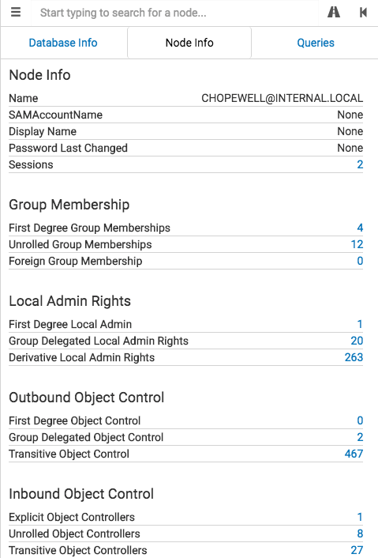

Clicking on a user node will populate the Node Info tab with information about that user:

Node Info
-Name: This is the name for the node, and is in domain simple format.
-SAMAccountName: This is the SAMAccountName for the user. This information is not currently collected by the ingestor.
-Display Name: This is the Windows display name for the user. This information is not currently collected by the ingestor.
-Password Last Changed: This is the date for when the user's password last changed. This information is not currently collected by the ingestor.
-Sessions: These are all the computers the ingestor identified the user as logged onto during collection.
Group Membership
-First Degree Group Memberships: These are the groups that the user is explicitly a member of. This is the information you would see when typing net user username /domain
-Unrolled Group Memberships: These are all of the user's effective group memberships. This is the equivalent of running Get-NetGroup -User username
-Foreign Group Memberships: These are all of the foreign groups that the user belongs to.
Local Admin Rights
-First Degree Local Admin: These are the computers where the user itself is added explicitly as a local administrator on a system.
-Group Delegated Local Admin Rights: These are the computers that the user gains administrator privileges to based on delegated group rights.
-Derivative Local Admin Rights: These are the computers the user can gain administrator rights to by impersonating a user currently using a computer the user has administrator privileges to, regardless of how deep this chaining goes.
Outbound Object Control
-First Degree Object Control: These are the other objects that this user has direct control over.
-Group Delegated Object Control: These are the objects that this user has control over via security group delegation.
-Transitive Object Control: These are the objects that this user has an ACL-only attack path to.
Inbound Object Control
-Explicit Object Controllers: The other principals which have first degree control over this user.
-Unrolled Object Controllers: By unrolling the first degree groups with control of this user, we see all the effective principals which control over this object via security group delegation
-Transitive Object Controllers: These are the other principals in the environment that have an ACL-only attack path to this user object.